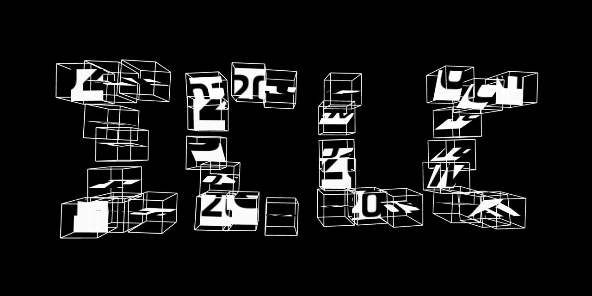

Last Update: December 19, 2022
Open Call for the ICLC 2023 in Utrecht
- Overview
- 2023 Conference Themes
- Who we are
- Code of Conduct/Environmental Statement
- Important Dates
- Submission Requirements
- Fees/Funding
- Contacts
- Frequently Asked Questions (FAQ)
Submissions are closed!
The call for Satellite Events continues until January 15.
Notifications of Acceptance will be sent out on January 23!
The International Conference on Live Coding (ICLC) is dedicated to practices and research focused on technologies and philosophies that interpret the use of computer code as gesture within the context of live performances. In its previous editions the community has offered important insights on this practice from many diverse perspectives – technical, philosophical, educational, political and more.
ICLC 2023 takes place in Utrecht, The Netherlands from April 19 to April 23 2023, and we wish to challenge our community to bridge even further to its multidisciplinary strengths. We are pleased to invite submissions of proposed contributions in the form of theoretical works, live and live-recorded audio/visual performances, videos, workshops and satellite events. This call is open to everyone. We encourage submissions that cover any topic related to live coding, but in particular we invite the exploration of the following overarching main theme:
Displacement
(Wikipedia: Displacement (linguistics), the ability of humans (and possibly some animals) to communicate ideas that are remote in time and/or space. Forced displacement, by persecution or violence. Displacement (psychology), a sub-conscious defense mechanism.)
The last few years, and probably also the years that will follow, show us how easily physical spaces we once considered safe and secure can become increasingly hostile environments due to new strains of pathogens, climate change or aggression. At the same time, we are confronted with new technologies for automated creation that might drastically change the value of the digital artisan's craft.
We invite you to reflect on the roles and opportunities that live coding practices, techniques and communities can play in these times of displacement – but equally to be inspired by other uses of the term, e.g. rhythmic displacement in music, displacement shaders, displacement in terms of physics, linguistics or psychology or generally being out-of-place, in many places at the same time or in representation instead of in situ.
More concretely, we are particularily looking for submissions relating to any of the following topics:
(Trans|Inter)disciplinary Live Coding
Live Coding is represented by communities with a strong focus on making audio and music. The writing of code as a performative act is however also practiced in other maker cultures and disciplines such as graphic design, visuals, games (shaders/demoscene), education, theatre and dance. As such the practice of live coding is displaced to other disciplines making it more inter- and transdisciplinary in character. We encourage submissions reflecting on how approaches and ideologies to live coding differ or overlap between these cultures, as well as on how they influence other disciplines and foster interdisciplinary collaboration.
Human/Machine Entanglement
The live coding practice is now 20 years old, having grown up alongside the processes that transformed AI and machine learning research in the mid-90s. Today we are looking at the diverse algorithmic agencies of the learning systems used in live coding context. The live coding feedback loop entangles mind, body and machines within physical interactions, through both machine-body and machine-mind relationships. We encourage submissions reflecting on those intersections, embracing questions such as live vs. offline training, dataset bias and size, algorithmic agencies and human-machine entanglements. Moreover, we look for submissions analysing displacement or re-placement of creativity.
Community Reports
We believe that one of the strong pillars of live coding is the community, both digitally and locally. It is the effort of people working together that helps to shape the live coding practice, facilitate spaces, define its tendencies and aesthetics and influence its outreach. In past years we have seen the communities around live coding expand, diversify, and professionalize while building bonds with each other to make a global community. The conference will open a space for 'Community Reports' – a short presentation introducing your local community and activities. Share with us the characteristics that define your community, its history, your ways of organizing and working together, your difficulties and your successes.
Presentation Formats
(see below for submission guidelines)
- Short Papers / Extended Abstracts
- Long Papers
- Community Reports
- Live Performances
- Workshops
- Video Gallery
- ICLC Satellite Events
The proceedings of the conference will be published with ISBN and DOI number for each article.
Who we are
The 2023 ICLC edition is organized by four live coding communities and artistic institutions based in the Netherlands, Ljubljana, Barcelona and Karlsruhe. This partnership emerged from the on-the-fly project carried out by a spread network across those places. Therefore, this ICLC edition is produced with a commitment to distributed work, where the organization process occurs as a feedback loop between communities.
Organizing Institutions: Creative Coding Utrecht (CCU), TOPLAP Barcelona, LJUDMILA Art and Science Laboratory, TOPLAP Karlsruhe, Netherlands Coding Live
Organizing Committee: Fabian van Sluijs, Saskia Freeke, Felipe Ignacio Noriega, Rafaele Andrade, Raphael Sousa Santos, Iván Paz, Lina Bautista, Ludovica Michelin, Alicia Champlin, Niklas Reppel, Luka Frelih, Patrick Borgeat, Timo Hoogland, Roger Pibernat
Institutional Partners: HKU University of the Arts Utrecht, Institute of Sonology, Conservatory of Amsterdam, more tbc
Location: Utrecht, The Netherlands
Live coding performances during ICLC 2023 will take place at a diverse selection of venues both in and around Utrecht.
Code of Conduct
All participants are expected to read and adhere to the ICLC 2023 official Code of Conduct, not only at the Conference but in all related proceedings and interactions with the ICLC community, online or in person.
Environmental Statement
We invite everyone to reflect on the impact that our research and practice has on our environment and ecosystems. Acknowledging this, we are incorporating sustainability and conservation criteria as guidelines for the conference planning. We invite everyone to take this into consideration before and after the conference. In the spirit of coming together for a live event, we want to encourage in-person attendance, and also encourage that attendees joining us make choices to minimize the impact of their travel with low-carbon options whenever possible. We also commit to fostering connections among attendees and nearby satellite events, to make the most of long distance travel with opportunities to turn your visit into a mini-tour. The presentations and performances of the conference will be live-streamed whenever possible. We are also open to hosting remote presentations when this is the best option.
Important Dates
- October 07, 2022: Call for submissions
- October 17, 2022: Submission system opening and templates available
- December 15, 2022: Deadline for submissions of papers, videos, performances and workshops
- December 18, 2022: Deadline for final updates to your submission before review (see FAQ)
- January 15, 2022: Deadline for submissions of proposals for satellite events
- January 23, 2023: Notification of acceptance
- March 2023: Deadline for updating selected written submissions
- March 2023: Camera-ready deadline for proceedings
- March 2023: Conference registration opens
- April 19-23, 2023: CONFERENCE DAYS!
Submission Requirements
Submission site: https://iclc2023.creativecodingutrecht.nl
Submission templates: https://github.com/iclc/iclc-templates/tree/main/2023
Please make sure to read the full proposal instructions shared in the README included with the templates.
There are no submission fees.
Submissions are in the first place submitted in English. However, only for the Live Performance category, you are welcome to also submit the proposal in your native language and include a machine translated version. Please disclaim on your submission that it was machine translated.
Long and short papers
- Short paper: 2-4 pages (2-4 pages in proceedings)
- Long paper: 5-12 pages (5-12 pages in proceedings)
- Short biography: max 150 words for each contributor
All papers must be written in academic format using the provided template, including appropriate citations as well as the application of suitable research methods.
Community Reports
- Text: 2-6 pages (2-6 pages in proceedings)
- Video: max 15 minutes (description and URL in proceedings)
- Video proposal format: Vimeo or Youtube or other streaming link
- Video description: max 150 words
Community Reports in written format will use the same official templates as required for Papers. Community Reports in video format should submit suitable links (i.e. Vimeo, Youtube) for peer review; entries will later be asked to provide a file for ICLC 2023 to publish. All community reports will be published in the proceedings, and texts will be peer reviewed for selection to be presented live during the Conference.
Live Performances
- Abstract: max 2 pages (abstract and bio in proceedings)
- Programme note: max 150 words
- Short biography: max 150 words for each contributor
- Technical questionnaire
Live Performances (including audio, visual, and A/V or multimedia) will largely be sorted into one of two formats: a concert format, with seated audience; and an Algorave format, unseated and intended for dancing.
Please support your submission with a clear description of your performance, and discussion of influences and prior art as appropriate. Feel free to provide a link (Vimeo, Youtube) to illustrate the performance. Please also be as thorough as possible with the Technical Questionnaire so that we can avoid surprises.
Workshops
- Short workshop: 2 hours
- Long workshop: 4 hours
- Abstract: max 700 words (700-word abstract and bio in proceedings)
- Short biography: max 150 words for each contributor
- Technical questionnaire
You will be asked to specify your target audience: eg. visitors, beginners, students, general public, experts, etc. Please also be as thorough as possible with the Technical Questionnaire so that we can avoid surprises.
Video Gallery
- Short form: up to 5 minutes
- Long form: above 5 minutes
- Proposal format: max 5 minutes (excerpt or full piece) in Vimeo or Youtube or other playable link
- Description: max 150 words (description, bio and URL in proceedings
- Short biography: max 150 words for each contributor
This category invites documentation of performances or physical pieces (installations, sculptures, etc.), interactive websites (xr pieces, net-art works, etc.) in the form of a video. Please submit suitable links (i.e. Vimeo, Youtube) for peer review; selected entries will be asked to provide a file for ICLC 2023 to publish.
ICLC Satellite Events
- Format: Declaration of interest
- Submit via email to iclc-events@creativecodingutrecht.nl until January 15, 2023
We invite live coding nodes from all over the world – but in particular from Europe – to host their own satellite events prior or after ICLC 2023. The goal is to create opportunities for traveling artists to perform or do a workshop in multiple locations (or on the way from/to Utrecht) and to turn ICLC 2023 into a tour – with Utrecht at its peak. While the committee of the ICLC cannot directly help with funding or organisation of your event an effort will be made to coordinate dates, locations and potential artists.
Please submit your intent to participate with your own event, providing us with a principal contact to your group/organization, the city where the event will take place and any information that might already be definitive (set date, set venue, line-up...). Additionally we invite you to join the channel #iclc-satellite-events on the TOPLAP Discord server to present and discuss your ideas for a satellite event in order to connect organizers as early as possible to make the most out of it.
We ask you to investigate possibilities to apply for local funding to help cover for accomodations, travel costs and in the best case artist fees. We can provide you with a Letter of Intent to support applications for funding, and will publish the date and url of your event on the ICLC website.
Fees & Funding Information
There are no fees to submit a proposal for peer review.
This year we want to make the conference accessible to as many people as possible. In doing so, we will propose a modest registration fee only for those with institutional support. The money collected from these fees will then be used to sponsor the travel of those who are not supported by a private or public institution. If you will be participating in the conference as a speaker or performer you can apply for travel asssistance.
Participants are also encouraged to seek outside funding. The committee can provide participants with Letters of Invitation/Intent to apply for support through local internationalization grants or the embassies that support cultural exchange.
Please follow ICLC 2023 updates for more details to come about registration fees and travel assistance.
Contact Information
Questions: iclc@creativecodingutrecht.nl
Follow ICLC 2023 for updates:
- https://assemblag.es/@incolico (Mastodon)
- https://t.me/iclc2023 (Telegram)
- https://www.facebook.com/livecodenet
Frequently Asked Questions (FAQ)
- WILL THE SUBMISSION DEADLINE BE EXTENDED THIS YEAR?
- Is the community report a paper OR a video, or can it also be a paper AND a video?
- Does the paper or video for community reports have to be finished before the submission deadline or can it be finished later for the camera ready deadline?
- Are Satellite events meant to take place at the same time as the conference and as a substitute for it, or adjacent events before and after the conference?
Will the submission deadline be extended this year?
Because we want to publish the invitations as soon as possible, so that there is time to make sensible travel arrangements, we will not be extending the submission deadline beyond the original cutoff date of December 15th. However! We still want to give a little bit of wiggle room, so:
- All submissions registered by the end of the 15th of December (before 00:00 GMT on 16th) can be edited until the end of the 18th of December so that final touches can be added or updated. This means you must create the entry and receive a Submission ID via email, so that you can log back in later and make your updates, until the 18th. The system will stop assigning Submission IDs at 00:00 GMT on Dec. 16th.
- An additional reminder: proposals for long-form videos and community report videos only require a 5 minute teaser, so the full video can be finished until camera-ready deadlines.
- Another reminder: Because we intend that all community reports will be published in the proceedings, regardless of peer review, these submissions may be accepted late, but only community report papers received by the submission deadline will be peer reviewed for possible presentation at the Conference. Later submissions will only be in the proceedings. Later community report videos can still be included in the digital gallery.
Is the community report a paper OR a video, or can it also be a paper AND a video?
Any combination is allowed.
Does the paper or video for community reports have to be finished before the submission deadline or can it be finished later for the camera ready deadline?
Because we intend that all community reports will be published in the proceedings, regardless of peer review, these submissions may be accepted late, but only community report papers received by the submission deadline will be peer reviewed for possible presentation at the Conference. Later submissions will only be in the proceedings. Later community report videos can still be included in the digital gallery.
Are Satellite events meant to take place at the same time as the conference and as a substitute for it, or adjacent events before and after the conference?
We envision Satellite Events as a potential to both engage local communities where travel to Utrecht is highly impractical, and as a scheme to create additional dates around Europe that would foster a touring opportunity for artists who are coming a long way to ICLC, to get the most out of their travel. So, we encourage any kind of event, but if in Europe, we hope you'll choose dates that are well-coordinated with other Satellite Events to join in creating a sort of itinerary that is accessible to as many artists as possible, rather than coinciding with other events or the conference itself. Please check out #iclc-satellite-events on the TOPLAP Discord to join the conversation.